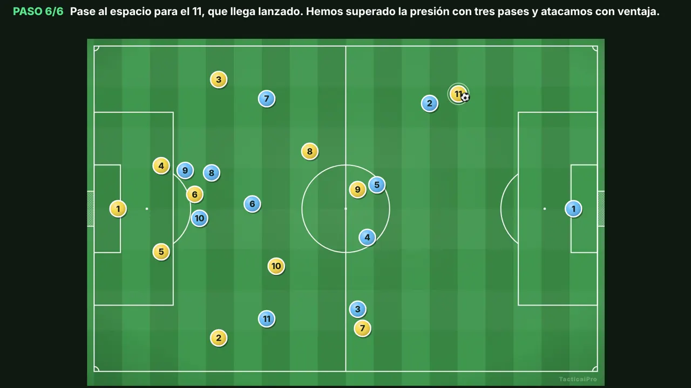
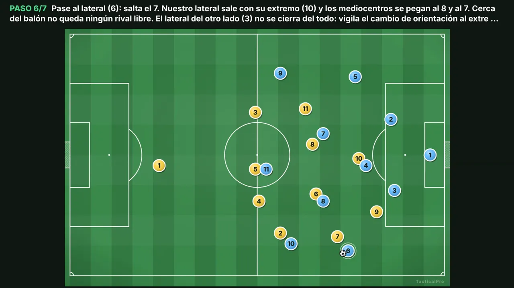
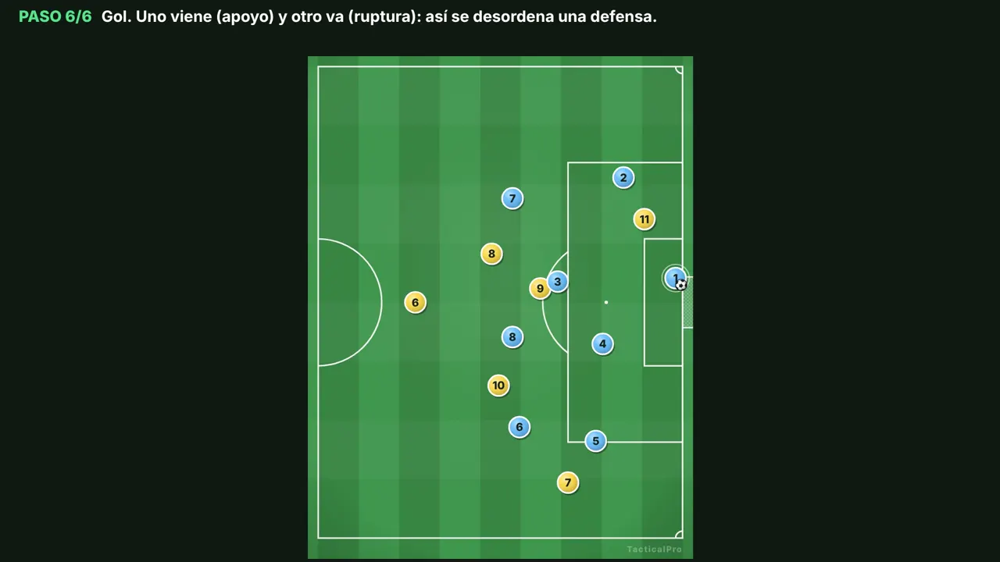

Aprende · Planifica · Entrena
Biblioteca de jugadas
Jugadas de fútbol 11 animadas paso a paso. Cada una explica su objetivo, cómo se mueve el equipo y una variante. Ábrela en TacticalPro y adáptala a tu equipo, gratis y sin registro.

Salida de balónSalida de balón ante presión alta
Superar la primera presión con tres pases: el 6 atrae, el 8 recibe de cara y el 11 ataca el espacio.

PresiónBloque alto: presionar en campo rival
Empujar la salida rival hacia la banda con saltos coordinados y la defensa adelantada.

AtaqueDesmarque de apoyo y de ruptura
Uno viene (apoyo) y otro va (ruptura): así se desordena una línea defensiva.
Iremos añadiendo jugadas nuevas. En la app ya tienes más de 70 plantillas en «Biblioteca ▾ › Plantillas».